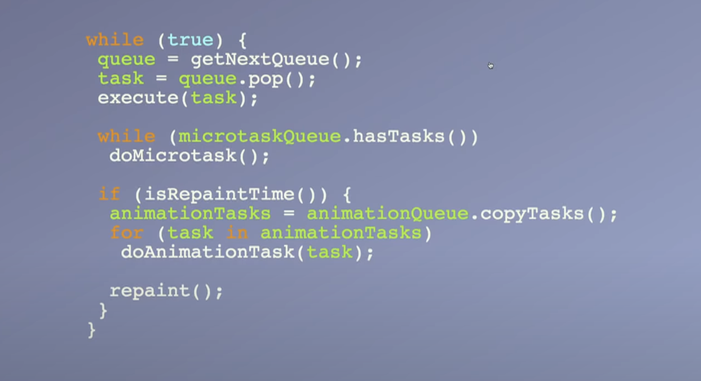
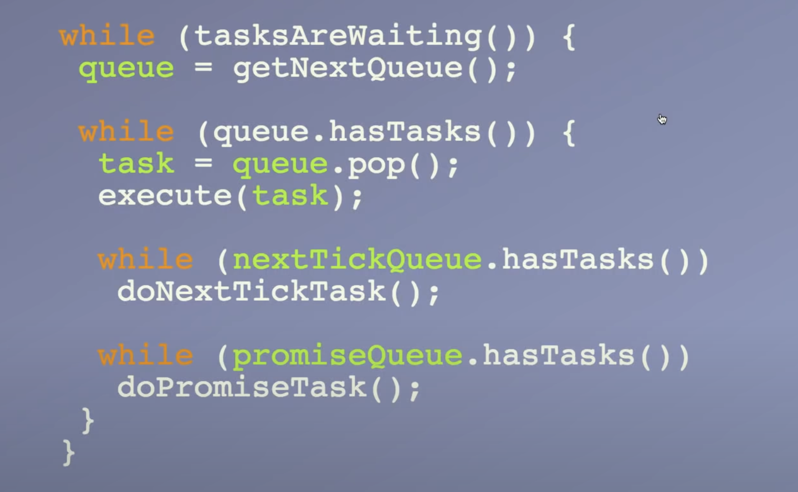
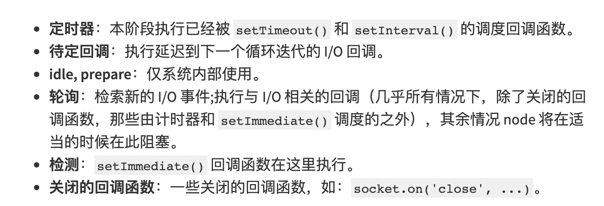

事件循环
事件循环 (Event Loop) 是 JavaScript 运行的机制，事件循环负责执行代码、收集和处理事件以及执行队列中的子任务。浏览器与 Node.js 的事件循环存在差异。
浏览器的事件循环
浏览器的事件循环如下：
- 从宏任务 (Macro Queue) 队列中取出一个任务放入执行栈，并执行
- 从微任务 (Micro Queue) 队列按”先进先出“的原则取出任务，并逐一执行，此时产生的微任务放入队列中，等待取出执行
- 所有的微任务执行完后，如果是渲染周期，则先执行 requesetAnimationFrame 队列中的所有任务，再进行渲染
- 重复步骤 1

宏任务与微任务有哪些
- 微任务
1 | Promise.then 等 |
- 宏任务
1 | setTimeout,setInterval,script 的代码, I/O, UI 交互事件, postMessage等等， |
requestAnimationFrame 的回调函数
其中 requesetAnimationFrame 的回调函数并不是宏任务，也不是微任务。
代码验证
通过代码示例的控制台输出，可以验证我们以上的结论。
1 | console.log("start"); |
** 控制台输出 **
1 | "start"; |
代码的执行顺序如下：
- 执行所有主流程语句，依次打印出”start”，”Promise”，”end”
- 执行进入微任务队列的任务,打印出”Promise resolve”
- 接着执行 requestAnimationFrame，打印出 “requestAnimationFrame”（验证了 requestAnimationFrame 即不是宏任务，也不是微任务）
- 最后执行 setTimeout 的回调，打印出 “setTimeout”
影响
通过了解事件循环，有助于了解浏览器内部的运行机制，更好的书写代码；运用宏任务和微任务的特点，写出性能更好的代码
- setTimeout/setInterval 作为宏任务计时是不准确，它们只能保证回调函数在指定时间进入等待队列，而不是立即执行
- 对于耗时任务，我们可以通过 setTimeout 将其拆分为各种小任务
- 避免 Promise.then 这样的微任务产生死循环
Node.js 的事件循环
Node.js 的事件循环如下：
- 在固定队列随机选择一个队列，从队列中取出第一个任务执行
- 执行 nextTick 队列中的所有任务
- 执行 promise 队列中的所有任务
- 回到步骤 1

Node.js 的固定队列

setImmediate 与 nextTick
setImmediate 需要等到下个循环才能执行，nextTick 才是立马执行
推荐视频
https://www.youtube.com/watch?v=u1kqx6AenYw&t=853s&ab_channel=JSConf